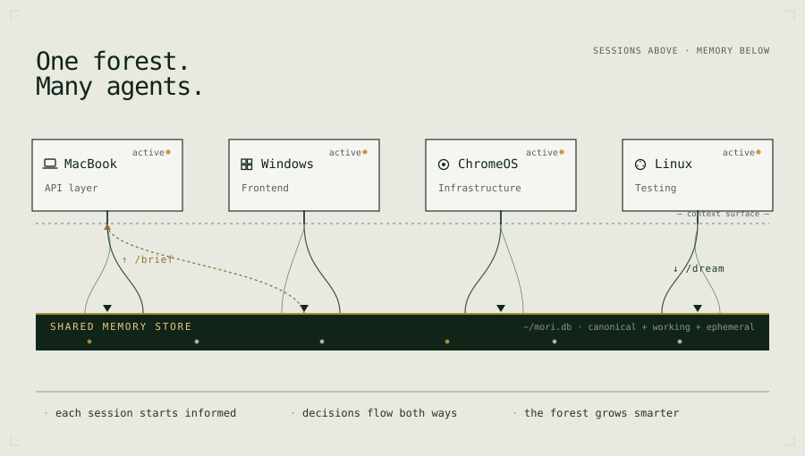
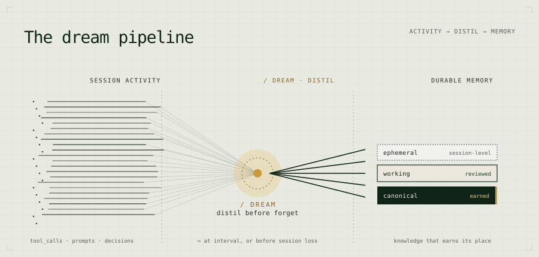
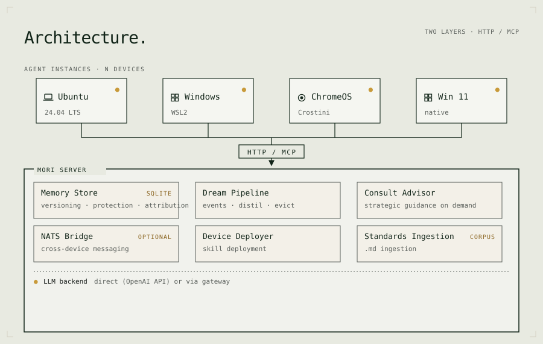
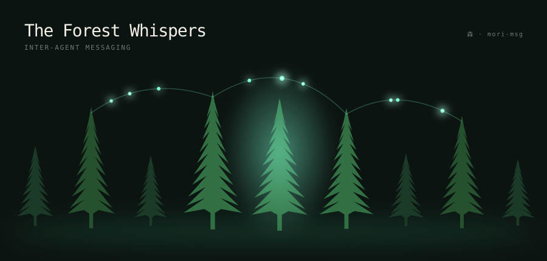

A shared memory layer for AI coding agents —
one that compounds.
One codebase. Many agents. No shared memory. Until now.
Your team shares a repo, standards, and a CI pipeline. But each agent session starts fresh — no memory of what the others decided, changed, or broke. Mori fixes that.

You're right to be sceptical of memory systems. You already have a CLAUDE.md (or .cursorrules) that works — keep it. Mori doesn't replace it. It's the layer above it.
Static facts you hand-edit. Always present, independent of any server. SSH commands, sudo rules, non-negotiable conventions — things that never change.
Decisions made, patterns established, lessons learned. Distilled each session, curated by the dream pipeline, surfaced at the start of the next — on any machine, for any agent.
Claude Code lifecycle hooks send session events to Mori automatically. Every tool call, decision, error — captured without changing how you work.
While you sleep, the dream pipeline distils events into durable memories. Signal, not transcripts. What matters, not what happened.
Every session starts with /brief — shared memories, team standards, cross-instance decisions. From turn one, every agent knows what the others know.

Every other memory tool requires you to instrument your app — call add() after responses, call search() before prompts.
Mori requires nothing. Lifecycle hooks capture your sessions automatically. You just work.
git clone https://github.com/fjwood69/mori.git cd mori cp deploy/homelab/.env.example deploy/homelab/.env docker compose -f deploy/homelab/docker-compose.yml up -d # Verify curl http://localhost:8968/health {"status":"ok"}

One Mori, many agents. Every session benefits from what every other session learned.
Point every instance at the same server. That's it.
The forest remembers. Now it whispers too — tasks and decisions passed directly between agents, without a shared session.
